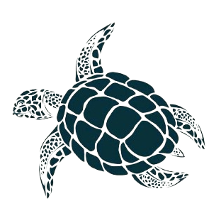

☼.˚𓆝 𓆟.˚⋆𓇼 Conheça mais sobre as Tartarugas Marinhas! 𓇼⋆.˚𓆝 𓆟⋆.˚☼
As tartarugas marinhas são criaturas incríveis que habitam os oceanos há milhões de anos. Elas desempenham um papel essencial no equilíbrio ecológico dos mares e encantam pessoas ao redor do mundo com sua beleza e mistério.
As tartarugas marinhas têm um ciclo de vida complexo, alternando entre ambientes marinhos e terrestres. Embora vivam no mar, desovam em praias, garantindo a incubação dos ovos. Ao nascer, os filhotes seguem para o alto-mar, onde encontram abrigo e alimento em ecossistemas oceânicos. Algumas espécies, como a tartaruga-de-couro, permanecem no oceano durante toda a vida, enquanto outras migram para áreas costeiras na fase juvenil. A maturidade sexual varia entre 15 e 30 anos, e os adultos retornam às praias de nascimento para reprodução. A desova ocorre nos períodos mais quentes, entre setembro e junho, dependendo da localização e da espécie.
Depois de mais de 100 milhões de anos de sobrevivência e evolução, as tartarugas marinhas continuam desempenhando importante papel ecológico nos ambientes onde ocorrem - das áreas costeiras a grandes profundidades oceânicas (as chamadas regiões abissais).
Além disso, como são grandes viajantes dos mares, conectam diferentes ecossistemas ao migrarem entre regiões tropicais e subpolares. Por tudo isso, são consideradas verdadeiros “engenheiras do oceano”, ajudando a manter em equilíbrio recifes de coral, bancos de gramas marinhas e o fundo do mar.
As espécies ameaçadas de extinção, animais ou vegetais, são aquelas em risco de desaparecer em um futuro próximo. Incontáveis espécies já se extinguiram nos últimos milhões de anos devido a causas naturais, como mudanças climáticas e incapacidade de adaptação a novas condições dos habitats que ocupam. O ser humano tem acelerado decisivamente este processo de extinção de espécies, destruindo habitats, explorando desordenadamente os recursos naturais e introduzindo espécies exóticas (vindas de outros locais).
Quatro das cinco espécies de tartarugas marinhas que ocorrem no Brasil estão ameaçadas de extinção. A tartaruga-de-couro continua “criticamente em perigo”, a tartaruga-cabeçuda e a tartaruga-oliva são “vulneráveis”, e a tartaruga-de-pente está “em perigo”. A tartaruga-verde saiu da lista de espécies ameaçadas, mas ainda é considerada “quase ameaçada” e depende de ações de conservação para manter esse status — resultado do trabalho do Projeto Tamar e outras instituições.
Antes dos anos 80, a caça e coleta de ovos eram grandes ameaças. Hoje, graças a décadas de conservação, esses riscos diminuíram bastante. No entanto, as cinco espécies ainda enfrentam muitos perigos causados pelo ser humano: destruição do habitat, poluição luminosa, predação, trânsito de veículos nas praias, pesca acidental, poluição do mar e mudanças climáticas, que afetam tanto o mar quanto as áreas de desova.
Um dos alimentos favoritos da tartaruga verde de Galápagos (Chelonia mydas) é a água-viva, cujo movimento na água se assemelha ao de um saco plástico flutuando na superfície do mar. Se as tartarugas confundirem suas presas e ingerirem os detritos espalhados pela poluição humana, as consequências podem ser drásticas
De acordo com dados coletados pelo Projeto Tamar, de 1 mil filhotes de tartarugas marinhas, apenas um chega à idade adulta.
Quando se trata de comunicação entre si, elas geralmente usam comunicação não verbal, como morder, espirrar água e piscar.
As tartarugas marinhas machos nunca saem do mar, mas as fêmeas ocasionalmente voltam à terra. Para a desova, elas retornam para a mesma praia onde nasceram.
A tartaruga marinha costuma chorar, não porque está com dor ou deprimida, mas para se livrar do excesso de sal no corpo. Suas glândulas lacrimais liberam uma solução salina que é duas vezes mais salgada que a água do mar.
Pesquisas apontam que a temperatura do ambiente onde estão postos os ovos pode influenciar o sexo dos filhotes. Se estiver abaixo dos 27,7°C, a maioria será macho e acima de 31°C, fêmea. Cientistas dizem que o aquecimento global tem provocado um desequilíbrio na proporção de machos e fêmeas das populações de tartarugas.
O Projeto Tamar é um dos maiores símbolos de conservação da vida marinha no Brasil. Desde os anos 1980, ele atua na proteção das tartarugas marinhas, espécies que encantam e emocionam, mas que também enfrentam muitos desafios para sobreviver.
Presente em 8 estados brasileiros, o Tamar trabalha em 23 localidades espalhadas por praias e ilhas oceânicas. Lá, equipes dedicadas monitoram ninhos, cuidam dos filhotes, estudam o comportamento das tartarugas e desenvolvem ações junto às comunidades locais — tudo com muito carinho e respeito à natureza.
Mas o Tamar vai além da proteção animal. Ele também transforma vidas humanas. O projeto promove educação ambiental, inclusão social, valorização da cultura local e ainda gera empregos e renda para moradores das regiões onde atua.
Graças a esse esforço coletivo e apaixonado, o Tamar já ajudou a recuperar populações inteiras de tartarugas e a criar uma rede de pessoas que acreditam em um futuro melhor para o planeta.
O Projeto Tamar é, acima de tudo, um exemplo de que, com conhecimento, cuidado e colaboração, é possível fazer a diferença — para os oceanos, para as tartarugas e para todos nós.
Clique no link para conhecer mais esse projeto! https://www.tamar.org.br/